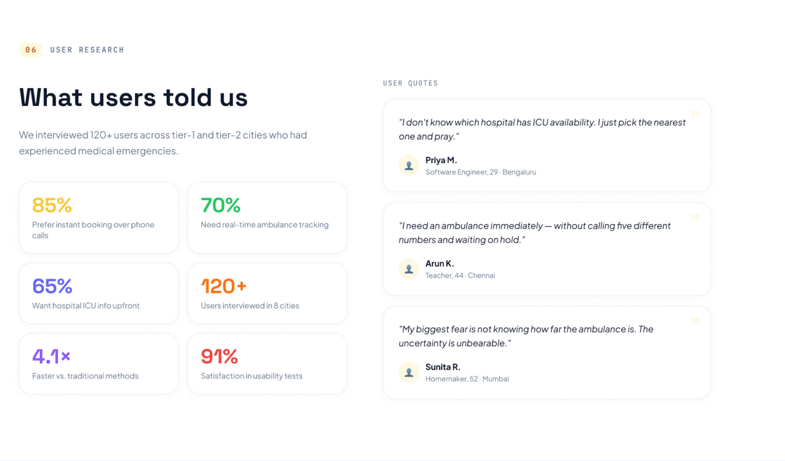
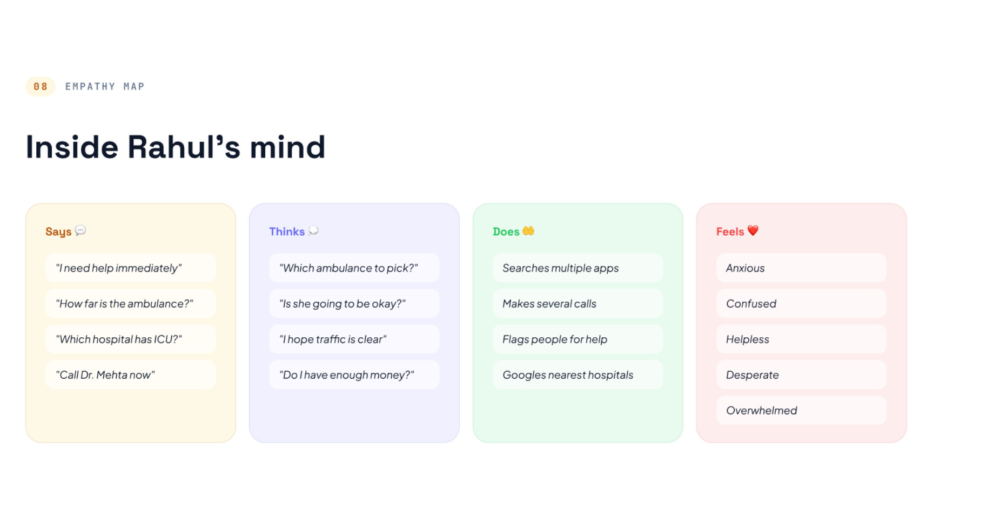
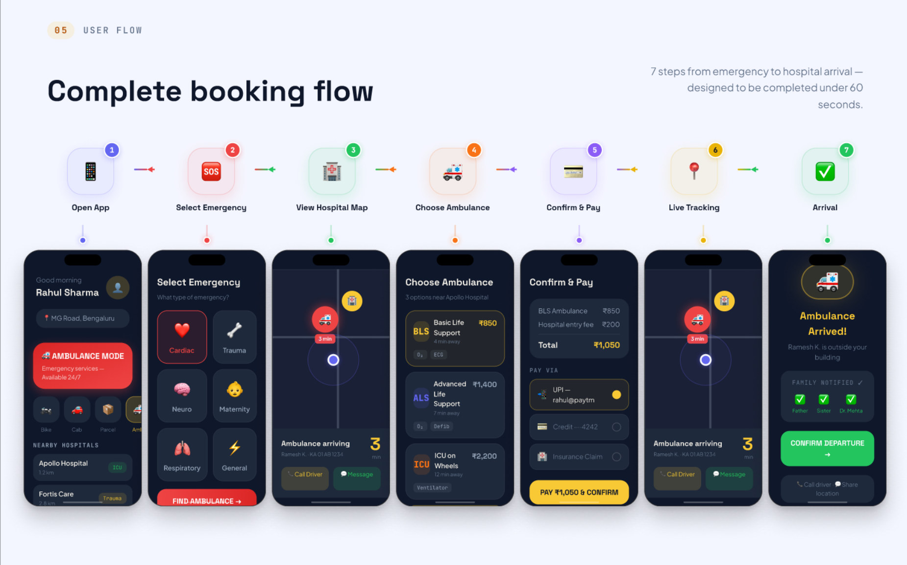
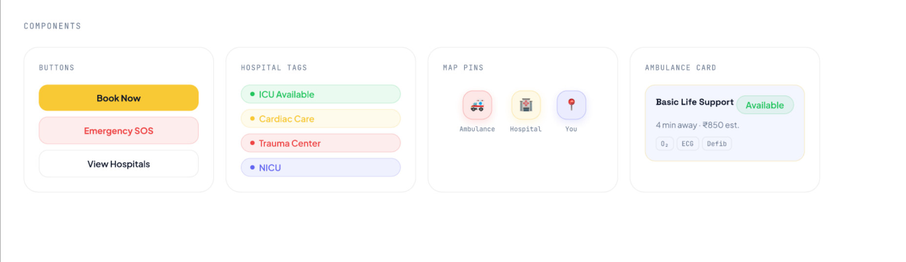
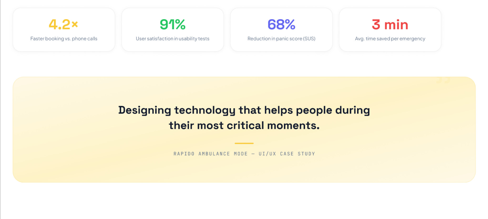

RAPIDO · HEALTHCARE + MOBILITY · UI/UX CASE STUDY
Rapido Ambulance Mode
A medical emergency is one of the most cognitively overwhelming moments a person can experience. This project redesigned that experience — cutting a 15–20 minute, panic-driven phone-call scramble down to a guided, sub-60-second booking with live ICU visibility and automatic family notification.
View full PDF ↗
01 — OVERVIEW
What we set out to build
Rapido is India's largest bike-taxi platform — but during a medical emergency, people reach for their phone and start calling. The goal was to build an Ambulance Mode directly into the Rapido app that removes every unnecessary decision, shows ICU availability in real-time, and gets help moving in under 60 seconds.
01
Find nearby hospitals
Show ICU capacity, specialisation, and real-time bed data upfront.
02
Book instantly
One-tap selection of BLS, ALS, or ICU-on-Wheels with live ETAs.
03
Track in real-time
Live map tracking and driver communication during the emergency.
04
Auto-notify family
Family members receive automatic alerts — no extra steps required.
02 — PROBLEM
The problem with calling for an ambulance
"During medical emergencies, every second matters — yet users juggle multiple phone calls, have no visibility into ambulance location, and receive no information about ICU availability."
01
Slow response
Finding an ambulance across multiple phone calls takes 15–20 precious minutes.
02
No visibility
Users cannot track ambulance location or estimate arrival time during the emergency.
03
Hospital confusion
No information on emergency facilities, ICU beds, or medical specialisations.
04
Communication gap
Family members are left uninformed during critical emergencies — adding to panic.
03 — USERS
Who uses this in a real emergency
The primary user is not a calm, prepared person — it's someone in a panic state, likely managing a loved one's emergency rather than their own. Secondary users include ambulance dispatchers and hospital staff who receive routing information.
Primary: The family manager
- Urban/semi-urban, aged 25–55
- Cognitive load is at maximum — trembling hands, blurred focus
- Needs guidance, not options
- Cannot read dense text or make complex decisions
- Wants reassurance that help is on its way
Secondary: The patient themselves
- May be the one booking while injured or ill
- Even less capacity for decision-making than a bystander
- Needs one-tap access with minimal friction
- Requires high contrast, large tap targets
- Needs confirmation that notification was sent
04 — RESEARCH


Empathy map capturing the cognitive state of someone managing a medical emergency
05 — KEY INSIGHTS
What the research revealed
Panic state demands guided flows, not open choices
Users in crisis cannot evaluate options. Every additional decision point increased time-to-booking and perceived stress. The solution had to be a guided sequence — not a menu.
ICU data reduces anxiety even when ETA is uncertain
Knowing a hospital has available ICU beds calmed users significantly — even when the ambulance hadn't been dispatched yet. Information itself is a stress reducer.
Family notification removes a major cognitive burden
One of the top stressors was "I have to call my family." Automatic notification eliminated this entirely — users ranked this feature as highly as real-time tracking.
Ambulance type is confusing — cost and care level must be visible together
Users didn't know the difference between BLS and ALS. Showing cost and what's included (oxygen, defibrillator, paramedic) removed the confusion entirely.
06 — DESIGN PROCESS
From research to screens
A 7-stage double-diamond process: starting with user interviews and field study, through problem definition and persona building, to high-fidelity UI and usability testing.
Research
User interviews + field study
Define
Problems + personas
User Flow
Journey + architecture
Wireframes
Low-fi sketches
UI Design
High-fidelity screens
Prototype
Interactive flows
Testing
Usability testing
07 — FINAL SOLUTION
7 steps. Under 60 seconds.
Every step was designed for a panic state — large tap targets, minimal text, high contrast, one clear next action. The flow was tested repeatedly until average completion time fell below 60 seconds.

7 screens · designed to be completed in under 60 seconds
STEP 01
Open App
Ambulance Mode visible from the home screen — no hunting.
STEP 02
Select Emergency
Cardiac, Trauma, Neuro, Maternity, Respiratory, General.
STEP 03
Hospital Map
Nearby hospitals with ICU bed count and specialisation shown upfront.
STEP 04
Choose Ambulance
BLS (₹850), ALS (₹1,400), or ICU on Wheels (₹2,200) with live ETAs.
STEP 05
Confirm & Pay
UPI, card, or insurance claim. Total shown before confirming.
STEP 06
Live Tracking
Real-time map with driver contact. Family automatically notified.
STEP 07
Arrival
Arrival confirmation, departure prompt. Family checkmarks visible.
08 — DESIGN SYSTEM
Components built for emergencies
Every component was designed with panic-state constraints — high contrast buttons, colour-coded hospital tags (ICU, Cardiac Care, Trauma), clear map pin hierarchy, and an ambulance card with all critical information visible at a glance.

Buttons · Hospital tags · Map pins · Ambulance card — the core component set
09 — BEFORE VS AFTER
The difference the design makes
Before — Phone-based booking
- 4–6 phone calls to find an available ambulance
- 15–20 minutes from emergency to dispatch
- No visibility into ambulance location
- No hospital ICU data — guessing which hospital to go to
- Family members not informed unless called separately
- High cognitive load — all decisions made under panic
After — Rapido Ambulance Mode
- 1 app flow, no calls needed
- Under 60 seconds from open to dispatch
- Real-time ambulance tracking on map
- Live ICU bed count and hospital specialisation
- Family auto-notified immediately on booking
- Guided flow eliminates all unnecessary decisions
10 — BUSINESS IMPACT
Results from usability testing

Usability testing results across 120+ users in 8 cities
11 — KEY LEARNINGS
What this project taught me
Designing for extreme states is designing for everyone
Optimising for panic — large targets, minimal text, guided steps — made the flow better for all users, not just those in emergencies. Stress-testing for the hardest case produces the clearest design.
Information is care
Showing ICU data, ambulance type, and ETA wasn't just useful — it was emotionally reassuring. The interface reduced anxiety not through soft copy but through concrete, real-time information.
Automation beats optional features in crisis flows
Family notification worked because it was automatic — not a toggle or a step. Any friction in a crisis flow means it won't be used. Remove the choice entirely when the action is universally correct.